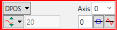
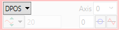
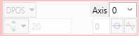
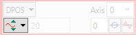
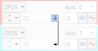
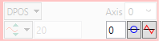
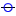
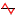

The controls for each of the four channels are grouped together and are surrounded by a coloured rectangle if the channel is ON, or a coloured bar to the left of the group if the channel is OFF. The colour is the same as the trace for that channel.
The group contains controls for channel operating mode, parameter selection and scaling.

The parameters which the oscilloscope can record and display are selected using the pull-down list box in the upper left hand corner of each channel control block. Depending upon the parameter chosen, the next label switches between `axis' or `ch' (channel). This leads to the second pull-down list box which enables the user to select the required axis for a motion parameter, or channel for a digital input/output or analogue input parameter. It is also possible to plot the points held in the controller table directly, by selecting the `TABLE' parameter, followed by the number of a channel whose first/last points have been configured using the advanced options dialog. If the channel is not required, then `NONE' should be selected in the parameter list box.

A pull-down list box which enables the user to select the required axis for a motion parameter, or channel for a digital input/output or analogue input parameter. The list box label switches between being blank if the oscilloscope channel is not in use, `axis' if an axis parameter has been selected, or `ch' if a channel parameter has been selected.

The channel operating mode controls how the trace is displayed and scaled
|
|
Trace off - no data gathered - trace not displayed |
|
|
Automatic Scaling - data gathered - trace automatically scaled to fit display |
|
|
Manual Scaling - data gathered - trace manually scaled |
|
|
Frozen - no data gathered - trace displayed as it was when frozen |
In automatic scaling mode the oscilloscope calculates the most appropriate range real-time while the data is being captured. The displayed range value is not editable and is the automatically calculated by the oscilloscope.
In manual mode the user selects the range per grid division.
The range can be changed by pressing the up/down buttons
 on the right side
of the current range text box.
on the right side
of the current range text box.

When oscilloscope is operating in 2D or 3D mode and 2 or more traces respectively are used together it is possible to lock the range so that the same scale factor is applied for the all traces in given group.
In XYZD mode only XYZ channels are subject to locking as the channel for thickness usually has its own range and is not suitable for locking.
In XYZUVW mode it is possible to lock XYZ and UVW channels separately because former are normally in metric units and later are in angular units.

There are three controls which control the offset of the channel:
|
|
In Yt mode the offset up/down buttons are used to move a trace vertically on the display. This control is of particular use when two or more traces have identical data, in which case they overlay each other and only the uppermost trace will be seen on the display. A number can be entered directly into the text box. |
|
 |
The Zero Offset button clears the channel offset. |
|
 |
The auto-zero button, when active (in the down position), applies automatic offset to the channel. The offset edit-box and Zero Offset button are disabled (greyed out). This is equivalent to AC coupling on a conventional oscilloscope. When button is not active the channel offset is manually adjusted. The offset edit box and Zero Offset button are enabled. |